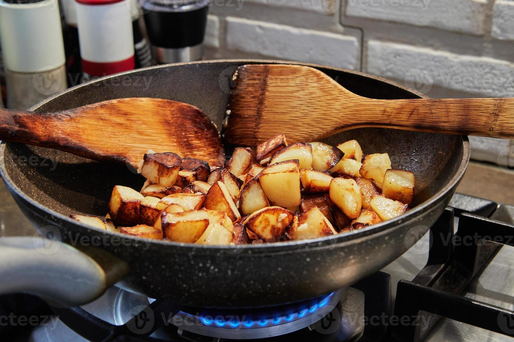

Ingredientes
- 2 patatas (400g)
- 1 vaso de aceite de oliva
- 4 huevos
- Agua
- Sal
Elaboración
Si las patatas estuvieran sucias,
pásalas por agua. Pélalas y córtales una base a lo
largo y después en rodajas (también a lo largo) de un centímetro de
grosor. Cuando tengas las rodajas, apílalas nuevamente (3-4 rodajas) y
córtalas en tiras.
Colócalas en un cuenco, cúbrelas con agua,
déjalas a remojo durante 10 minutos y sécalas bien con
un trapo de cocina bien limpio. Calienta el aceite en una sartén, y
antes de que empiece a humear, añade las patatas y fríelas a
fuego medio (por los 2 lados), removiéndolas de vez en cuando
hasta que se doren (10 minutos). Retíralas con una espumadera,
escúrrelas sobre un plato forrado con papel absorbente de cocina y
sálalas con un poco de sal fina.
Para freír los huevos, es importante hacerlo de uno en uno. Con un
cacillo, pasa 3 cazos de aceite a una sartén más pequeña y pon a
calentar. Cuando empiece a humear, casca el huevo, colócalo en
un cuenco y agrégalo con cuidado a la sartén. Con una espumadera, echa
aceite por encima y fríelo durante 20-30 segundos.
Escúrrelo y sálalo. Repite la operación con el resto de los huevos.
Consejo
No te quemes, que luego escuece, así que no remuevas las patatas con la mano. Usa una espatula que para algo existen.
